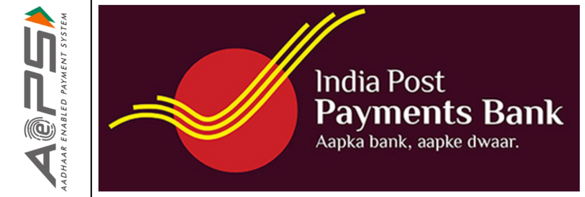

Performed advanced SQL-based analysis on 2022 CMS Medicare-Outpatient claims data focusing on
submitted charges, allowed amounts, and Medicare payments accross APCs.

This project evaluates three webpage variants using real web analytics data from a multivariate
A/B test. I applied chi-square tests, proportion Z-tests, Mann–Whitney U tests, segmentation
analysis, and bootstrapped revenue modeling to determine which design drove higher conversions
and revenue.
Data wrangling or cleaning is the first step of every data analysis. In this project, I
transformed Nashville's housing data to enhance its usability for analysis using complex SQL
queries.
Analysing Bank Loan Data with SQL and Tableau to enhance lending practices through data
exploration and visualisation.

As part of my Google BI certification I completed case study for a NYC-based bike rental
service, using and uncovered usage patterns by neighborhood, customer segments, and
seasonality—informing station expansion strategy and growth planning.

This project details the launch of Aadhaar Enabled Payment System (AEPS) services in the
district where I was posted. The project was particularly challenging due to its timing,
coinciding with the easing of COVID-19 restrictions and society's return to normalcy.